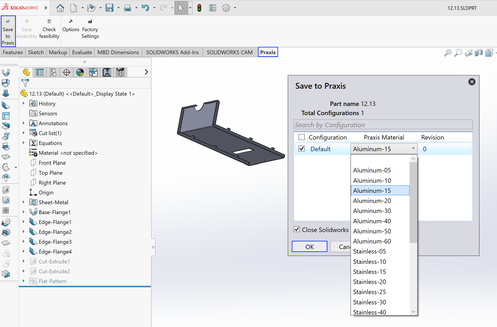

パーツの保存
SolidWorksを起動し、板金パーツ（.sldprt）を開きます。
次の手順に従います：
-
SolidWorksのTruSmartCAMタブに切り替えて、TruSmartCAMツールバーにアクセスします。
-
*TruSmartCAM*ツールバーの*Praxisに保存する*をクリックします。
*Praxisに保存する*ダイアログで、適切なTruSmartCAM原材料を選択し、 *OK*をクリックしてパーツをTruSmartCAMパーツライブラリにアップロードして保存します。

パーツがTruSmartCAMに保存されます。

| TruSmartCAMには、`C:\Program Files\Metamation\ TruSmartCAM \Samples\Parts`にいくつかのサンプルパーツが含まれています。必要に応じてテスト目的で使用できます。 |
自動材料解決
この機能は、アップロード時にSolidWorksの材料とパーツの厚さの値を、対応するTruSmartCAM原材料に自動的に変換します。
材料マッピングを設定するには：
-
*TruSmartCAM*ツールバーの*オプション*をクリックして、*オプション*ダイアログを開きます。

-
*材料マッピング*ページに移動します。
-
左側のペインで、SolidWorks材料を選択します。
-
右側のペインで、対応するTruSmartCAM材料を選択します。
-
*マッピング*をクリックしてマッピングを作成します。
-
マッピングされたペアが下部のマッピングリストに表示されます。
-
-
マッピングを削除するには、それを選択して*マッピング解除*をクリックします。
厚さ許容値の設定
厚さ許容値は、TruSmartCAMがSolidWorksの板金モデルの厚さをTruSmartCAMデータベース内の既存の原材料厚さと一致させる際の許容範囲を定義します。これは、設計の丸め、単位変換などによって生じるモデル厚さの小さな変動を補償します。
SolidWorksパーツの厚さがTruSmartCAMの材料と正確に一致しない場合、許容値により最も近い利用可能な材料が自動的に選択されます。
公称2.0 mm材料で許容値が0.05 mmの場合：
-
TruSmartCAMは、1.95 mmから2.05 mmの間のSolidWorksモデル厚さを有効な一致として受け入れます。
-
この範囲を超える偏差は、パーツアップロード時に手動材料選択プロンプトをトリガーします。
許容値を表示または変更するには：
-
*TruSmartCAM*ツールバーの*オプション*をクリックし、*種々の設定*に移動して許容値を表示してから、*Praxisに保存する*をクリックします。

-
*Praxisに保存する*ダイアログで*OK*をクリックすると、パーツがTruSmartCAMに保存されます。

カスタムパーツプロパティの読み取り
この設定により、TruSmartCAMは、SolidWorksパーツファイルから*Material*、Revision、およびその他のユーザー定義属性などのカスタムパーツ情報を自動的に読み取ることができます。
設定するには：
-
*TruSmartCAM*ツールバーの*オプション*をクリックして*オプション*ダイアログを開き、*フィールドをカスタマイズする*に移動します。

-
*マッピング*および*マッピング解除*ボタンを使用して、必要なTruSmartCAMフィールドを対応するSolidWorksのCustomまたはConfigurationフィールドとリンクします。
| 表示される値は、現在アクティブなSolidWorksパーツから読み込まれます。 |
-
マッピングが完了すると、選択されたカスタムプロパティは、パーツがTruSmartCAMにインポートまたは更新されるたびにSolidWorksから自動的に読み取られます。次に*Praxisに保存する*をクリックします。
| ここで定義されたマッピングはTruSmartCAMリポジトリに保存され、ネットワーク内のすべてのTruSmartCAM SolidWorksインストールで自動的に同期されます。 |
-
*Praxisに保存する*ダイアログで*OK*をクリックすると、パーツがTruSmartCAMに保存されます。